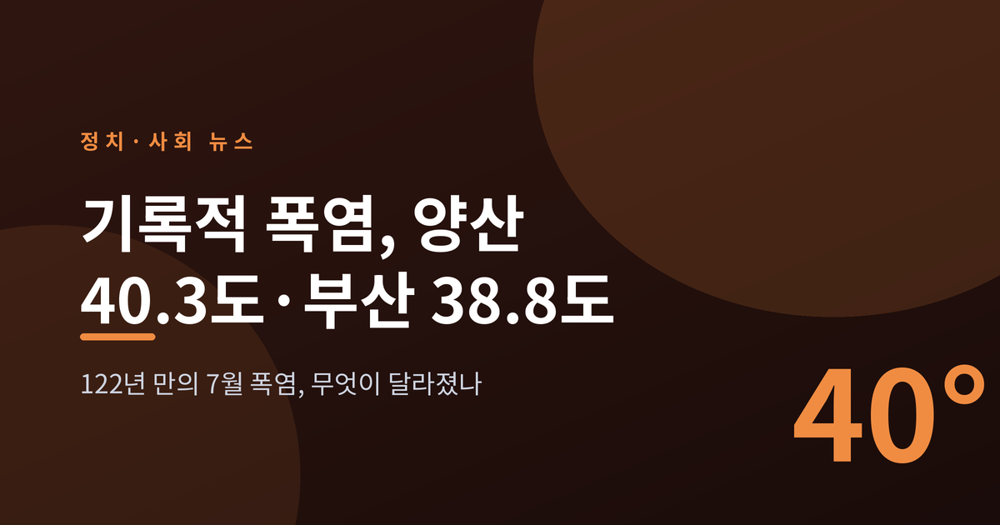
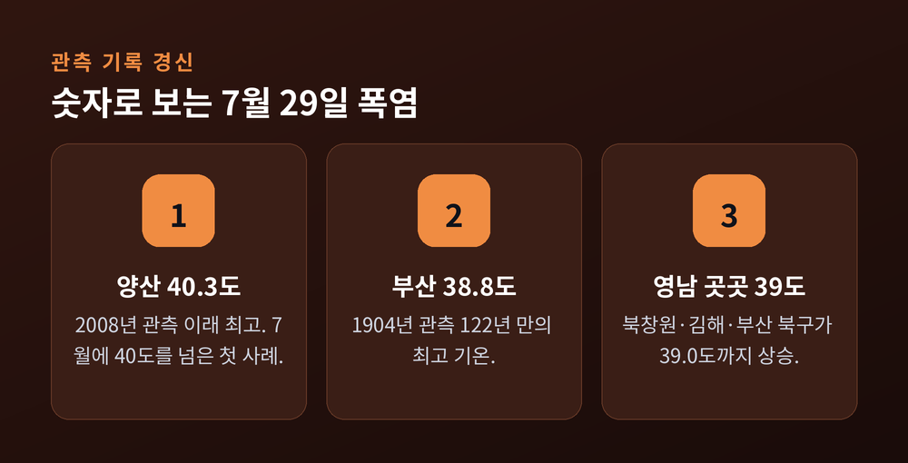
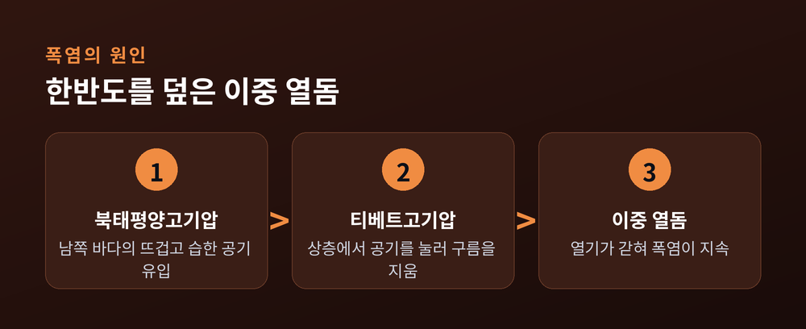
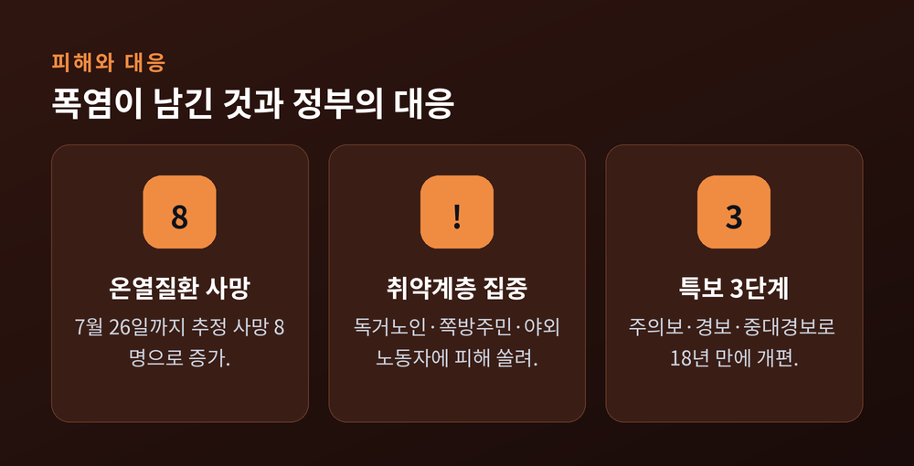
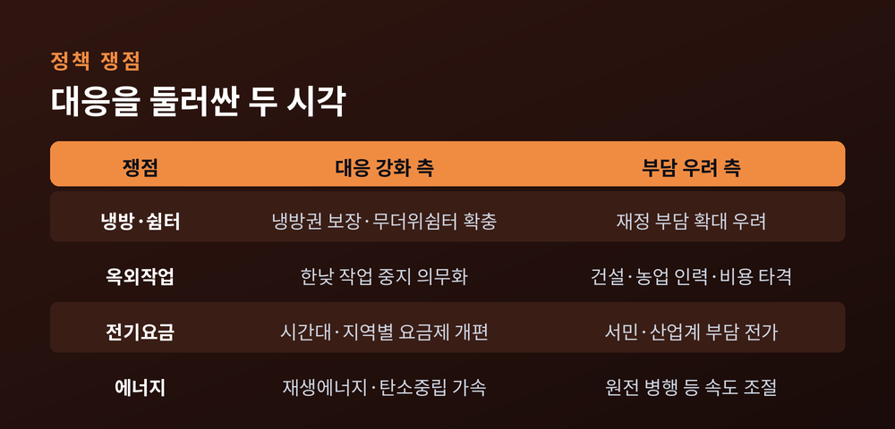
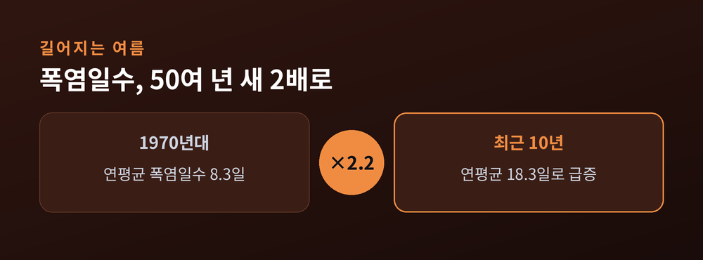

무슨 일이고 왜 중요한가
이번 글에서는 2026년 7월 말 한반도를 덮친 기록적 폭염을 정리해 보겠습니다.
양산이 40.3도까지 오르고 부산이 122년 관측 사상 최고를 새로 쓴 하루, 그리고 그 뒤의 온열질환·전력·정책 문제를 차분히 짚어봅니다.
기후 대응은 민감한 주제인 만큼, 어느 한쪽을 편들기보다 상반된 시각을 함께 담았습니다.

7월 29일, 경남 양산의 낮 최고기온이 40.3도까지 올랐습니다.
오후 3시 33분에 찍힌 이 값은 2008년 양산에서 기상관측을 시작한 이래 가장 높은 수치입니다.
사흘 만에 자체 최고 기록을 다시 갈아치운 셈입니다.
며칠 사이에 기록이 계속 경신되고 있다는 점이 더 무겁게 다가옵니다.
같은 날 부산도 38.8도를 기록했습니다.
1904년 관측을 시작한 지 122년 만에 나온 가장 높은 기온입니다.
종전 기록이던 2016년 8월의 37.3도를 1.5도나 웃돌았습니다.
양산과 부산만이 아니었습니다.
북창원과 김해, 부산 북구가 나란히 39.0도를 찍었고, 창원과 부산 금정구도 38.8도까지 올랐습니다.
창녕(도천)과 합천 역시 38도 중반을 넘겼습니다.
영남 일대가 통째로 달궈진 하루였습니다.
한낮의 아스팔트 위로 아지랑이가 피어오르는 풍경이, 이제 여름의 일상처럼 되어가고 있습니다.
숫자만 놓고 보면 몇 도 차이지만, 몸이 느끼는 무게는 전혀 다릅니다.
40도라는 문턱을 넘는 순간, 폭염은 불편함이 아니라 위험이 됩니다.

숫자 하나가 특히 무겁습니다.
바로 '7월의 40도'입니다.
우리나라에서 40도를 넘는 극한 고온은 지금까지 대부분 8월에만 나타났습니다.
2018년 홍천의 41.0도가 대표적인 예였습니다.
그런데 이번에는 7월에, 그것도 아직 8월이 오기도 전에 40도의 벽이 뚫렸습니다.
여름의 정점이 앞당겨지고 있다는 신호로 읽힙니다.
원인으로는 '이중 열돔'이 지목됩니다.
상층에는 티베트고기압이, 하층에는 북태평양고기압이 겹겹이 자리를 잡았습니다.
북태평양고기압은 남쪽 바다에서 뜨겁고 습한 공기를 실어 옵니다.
티베트고기압은 공기를 아래로 짓눌러 구름을 지웁니다.
구름이 걷힌 하늘 아래로 햇볕이 그대로 쏟아지는 구조입니다.
두 고기압이 뚜껑처럼 한반도를 덮으니, 열기가 갇혀 빠져나가지 못합니다.
기상청은 이 복합 작용이 이례적 고온을 만들고 있다고 설명했습니다.

기온 경신은 통계지만, 그 밑에는 사람이 있습니다.
올여름 온열질환 추정 사망자는 7월 26일까지 8명으로 집계됐습니다.
이날 경남 하동의 80대 여성과 전북 김제의 90대 여성이 온열질환 추정 사망으로 확인됐습니다.
7월 10일까지만 해도 추정 사망은 2명이었습니다.
불과 보름여 만에 피해가 네 배로 불어난 것입니다.
같은 기간 온열질환으로 병원을 찾은 사람도 수백 명 단위로 쌓였습니다.
피해는 특정한 사람들에게 쏠렸습니다.
고령의 독거노인, 쪽방 주민, 노숙인, 그리고 한낮에도 일을 멈추기 어려운 야외노동자들입니다.
에어컨이 있는 방과 그렇지 못한 방 사이에서, 폭염은 전혀 다른 얼굴을 보입니다.
같은 도시, 같은 기온이라도 누군가에게는 견딜 만한 더위이고 누군가에게는 생명을 위협하는 재난입니다.
전력 문제도 여기에 겹칩니다.
냉방수요가 한꺼번에 몰리면 전력망에 과부하가 걸릴 수 있습니다.
정작 냉방이 가장 절실한 취약계층은 요금 부담 탓에 에어컨을 켜기조차 망설이는 경우가 많습니다.
정부도 대응 수위를 끌어올렸습니다.
7월 28일 행정안전부는 전국 폭염 위기경보를 최고 단계인 '심각'으로 올렸습니다.
기상청은 6월부터 폭염특보를 18년 만에 손봤습니다.
기존 '주의보·경보' 2단계에 '중대경보'를 더해 3단계로 세분화했습니다.
보건복지부는 거동이 불편한 취약노인에게 하루 두 번 이상 안부를 확인하는 대책을 내놨습니다.
다만 현장의 목소리는 조금 다릅니다.
배달·건설 일용직처럼 매뉴얼 밖에 놓인 노동자들은 여전히 사각지대라는 지적이 나옵니다.
"온열질환을 매일 겪는다"는 증언도 보도됐습니다.

폭염이 해마다 독해지면서, 대응을 둘러싼 논쟁도 뜨거워지고 있습니다.
한쪽에서는 대응을 더 강하고 빠르게 하자고 말합니다.
폭염이 사실상 '재난'으로 굳어진 만큼, 냉방권 보장과 무더위쉼터 확충이 필요하다는 것입니다.
한낮 옥외작업 중지를 권고가 아니라 의무로 바꾸자는 목소리도 있습니다.
기후보험처럼 폭염으로 일을 못 한 취약계층의 손실을 메워 주자는 제안도 나옵니다.
재생에너지와 탄소중립을 더 서둘러야 한다는 주장도 여기에 맞닿아 있습니다.
다른 쪽에서는 속도와 비용을 걱정합니다.
전기요금제 개편이 결국 서민과 산업계의 부담으로 옮겨갈 수 있다는 우려입니다.
옥외작업을 전면 중지시키면 건설·농업·자영업 현장이 인력과 비용에서 타격을 받는다는 반론도 있습니다.
원전과 재생에너지를 함께 쓰자는 에너지 믹스 조정론도 다시 힘을 얻고 있습니다.
정부는 2030년까지 재생에너지 비중을 20~30%로 늘리고, 시간대별·지역별 전기요금제를 손보겠다고 밝힌 상태입니다.
결국 문제는 하나로 모입니다.
폭염이 재난이 되는 속도와, 사회가 감당할 수 있는 대응 비용 사이의 균형입니다.

당장 더위가 꺾일 기미는 보이지 않습니다.
기상청은 8월 9일까지 낮 최고기온이 33~39도로 평년을 웃돌 것으로 봤습니다.
'열돔 감옥'이 최소 열흘 이상 이어질 수 있다는 전망입니다.
영남을 달군 폭염은 서울과 중부로도 북상하고 있습니다.
더 긴 시야로 보면 흐름은 더 뚜렷합니다.
지난 53년간 연간 폭염일수는 10년마다 1.8일씩 늘었습니다.
최근 10년의 연평균 폭염일수는 18.3일로, 1970년대의 8.3일보다 2.2배 많아졌습니다.
열대야도 시작은 5~15일 빨라지고, 끝은 10~20일 늦어졌습니다.
밤에도 열기가 식지 않으니 몸이 회복할 틈을 얻지 못합니다.
예전엔 8월 한복판의 며칠이 고비였습니다.
지금은 6월에 시작해 9월까지 이어지는 긴 여름이 새로운 공식이 되어가고 있습니다.
물론 이 모든 수치가 곧바로 미래를 단정하지는 않습니다.
해마다 기상 조건은 달라지고, 올여름이 유난히 극단적인 사례일 가능성도 남아 있습니다.
다만 긴 흐름이 한 방향을 가리키고 있다는 점은 부정하기 어렵습니다.

끝으로 한 마디만 더 드리겠습니다.
이번 기록은 단순한 무더위의 최고점이 아니라, 우리가 이미 다른 여름 속에 들어와 있다는 신호에 가깝습니다.
대응의 방향과 속도를 두고 의견은 갈리지만, 폭염이 매년 더 길고 독해진다는 사실만은 다투기 어렵습니다.
— 40도라는 숫자가 특별한 하루가 아니라 익숙한 여름이 되기 전에, 우리는 무엇을 준비해야 할까요.
참고 소스